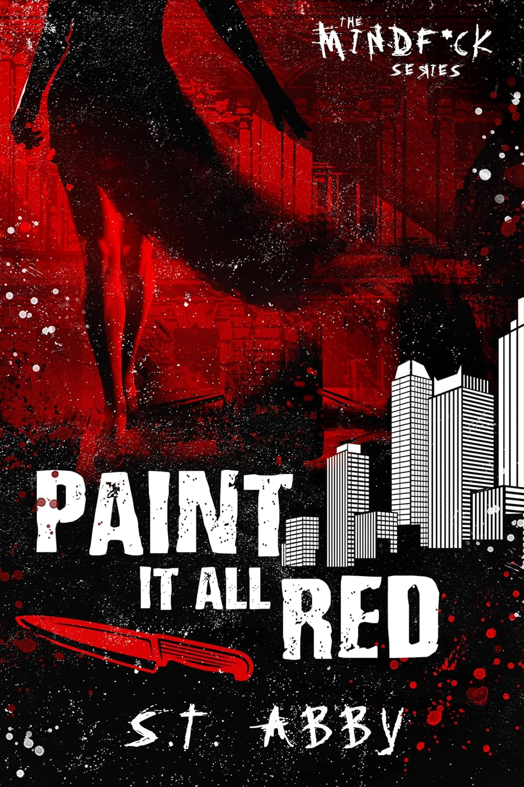

The book review
Paint It All Red
The final Mindf*ck novel brings Lana and Logan's intertwined stories to a tense conclusion.
Overall review
S.T. Abby closes the Mindf*ck series with a fast-moving finale that brings its central relationship and long-running conflict to a decisive end. The emotional stakes and Lana's complicated pursuit of justice give the conclusion its impact.
Review in detail
The story moves quickly between action and the consequences of earlier choices. Its strongest moments come from seeing Lana and Logan face what the truth means for both of them. As a series ending, it is most rewarding when read after the previous books; the dark subject matter may not suit every reader.
Who should read it
This finale is for readers who have followed the Mindf*ck books and want the characters' arcs brought to a close. It suits fans of dark romantic suspense, but readers should check content notes for intense and violent themes.